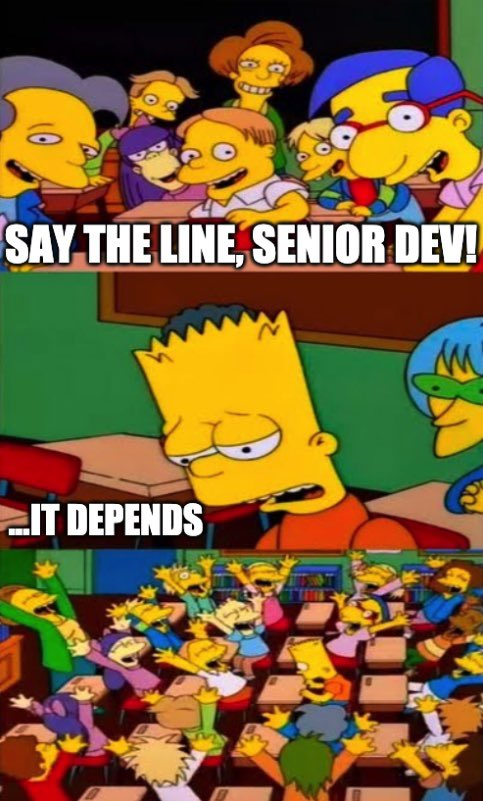

There’s No Test Set
Contents
There’s No Test Set#
This note was born after a job interview at which I was asked to “name three Best Practices™ in deep learning”. Putting aside the adequacy of this exact formulation, it got me thinking: what are Best Practices™, and how are they best and to what extent. And how they serve people as a way to reduce cognitive load while solving a problem. So here are some thoughts about one of the key ML best practices.
Jun 28, 2023
Every book on machine learning tells us that to create a model properly we should split our data into three parts:
Training set - an actual training data which the model is fitted to.
Validation set - a held-out data which is used to tune the model and select hyper-parameters based on metrics computed over this set.
Test set - another held-out data which is used for model evaluation after it was trained and tuned.
This approach is described in every book, paper, article, blog post and tutorial. You can find it on wiki, in lecture notes and in Bishop’s book, which is considered by many an ML Bible. It’s a best practice, thus many ML practitioners don’t think of it too much. It is seen as some common sense knowledge which doesn’t require any explanation. But I would argue that a proper test set is like a perfect circle: it exists only on paper and here’s why.
Squaring The Circle#
Chances are, you may have been confused at some point in your life by validation/test sets and wondered, what’s the difference between the two, because the Internet is full of articles explaining the distinction and purpose of these concepts. This means, probably, that the line is kinda thin between them which puts people into confusion. And because there’s plenty of information on the topic, I won’t go through the definition but address the elephant in the room right away.
By definition we accept some information leak from the val set to the model. The purpose of the test set, however, is to provide an unbiased estimate of the model’s performance, which means that there must be absolutely no information flowing from the test set to the model to prevent any overfitting. But what happens in practice is:
We obtain a model using a training/validation data
We evaluate it on a “test set”
We get unsatisfactory results
We go back to the drawing board and tweak a model
Statistical theory kinda assumes that we should stop at step 3 and live with it. But every sane person would still go to step 4 because we don’t need some model - we need the model which solves a problem well. And at this exact moment the information from the test set has leaked into the model through our knowledge of the target metric. This is called peeking. It renders our test set invalid, and we need to go and get a new one. And this is what creates a confusion about test/val sets for everyone who has solved a real ML problem, because both of them leak information. So there’s a dilemma: either have a large supply of fresh data at the development stage or accept some level of overfitting at the production stage. Data is expensive, so the choice is obvious.
This changes our perspective on model evaluation a bit. Instead of thinking about a test metric as a true measure of model performance, we should ask by how much does our test set reduce overfit. And the answer heavily depends on the model and the task at hand. Kagglers, for example, know very well that a test metric can be very deceiving. Additionally, a test set may have a domain shift relative to the train/val sets, in which case the problem becomes even worse.
This implicit peeking puts an expiration date on your test sets: the more experiments you do with it, the more information from it is absorbed by the model and the less useful it is in providing good estimates. So you need to get a new one at some point. And then again and again. This is exactly what books tell us:
Peeking is a consequence of using test-set performance to both choose a hypothesis and evaluate it. The way to avoid this is to really hold the test set out - lock it away until you are completely done with learning and simply wish to obtain an independent evaluation of the final hypothesis. And then, if you don’t like the results you have to obtain, and lock away, a completely new test set if you want to go back and find a better hypothesis.
Russel S., Norwig P., Artificial Intelligence: A Modern Approach, 2009
But most of the time if ask for yet another data set, you’ll be told that you need to be creative with the data, because getting clean data (which a proper test set should be) costs a lot of time and money.
Conclusion#
Unfortunately there’s no silver bullet, and the best statistical solution to the overfitting problem we have is a good old cross-validation which includes test splits as well. It won’t magically give you a perfect model but it’s the best we have. The problem with CV is pretty clear, however: sometimes it’s just too costly. And to make everything work well you also need to be certain that your train/val/test sets come from the same data distribution, which is not always the case. Sometimes a train set is a huge dump of uncurated data while the test set is carefully designed to cover necessary use cases. You can randomize data splits between different experiments to perform sort of a “dynamic cross-validation” while you tweak your model but then you cannot truly compare experiments.
The real world is a messy place and what is considered a best practice in ML books may not be the optimal way to solve a problem when you take into account things books don’t talk about. And good or not, but nobody really cares about statistical purism. People want cost-effective solutions which are good enough.
{kind=link}
Have a good night.